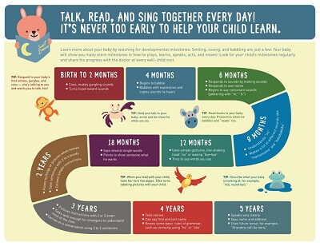
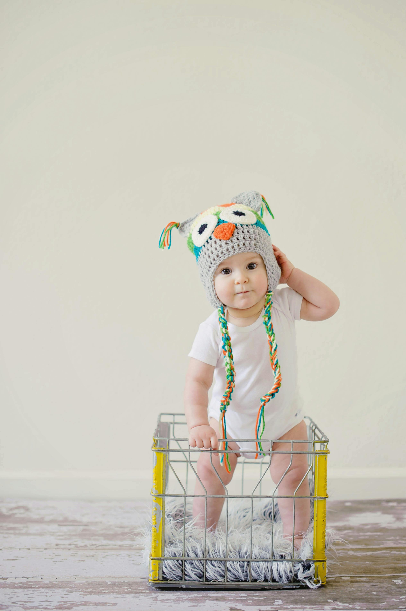
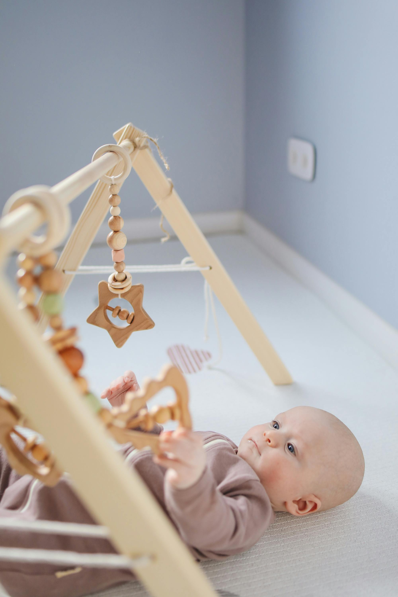
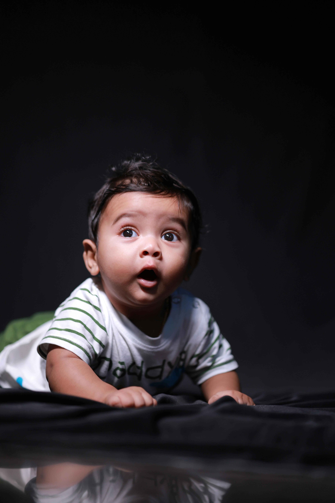
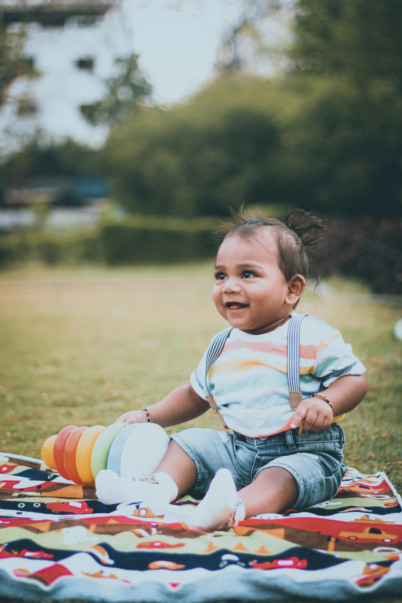

Don't worry, Mom, we'll clear up your doubts here.
This is not a competition, it's a guide to what you can expect.
⚠️ NOTE: Milestones are guidelines, not rules. In this section, you'll find average age ranges. Remember that every baby develops at their own pace. The most important thing isn't when they reach the milestone, but that they maintain consistent progress. If you have any questions, your pediatrician is always your best resource.




